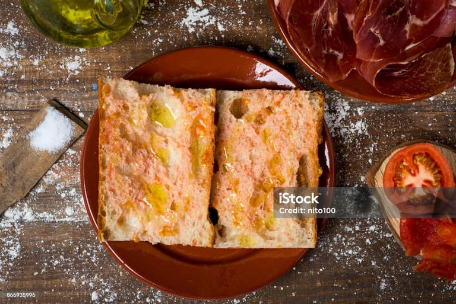
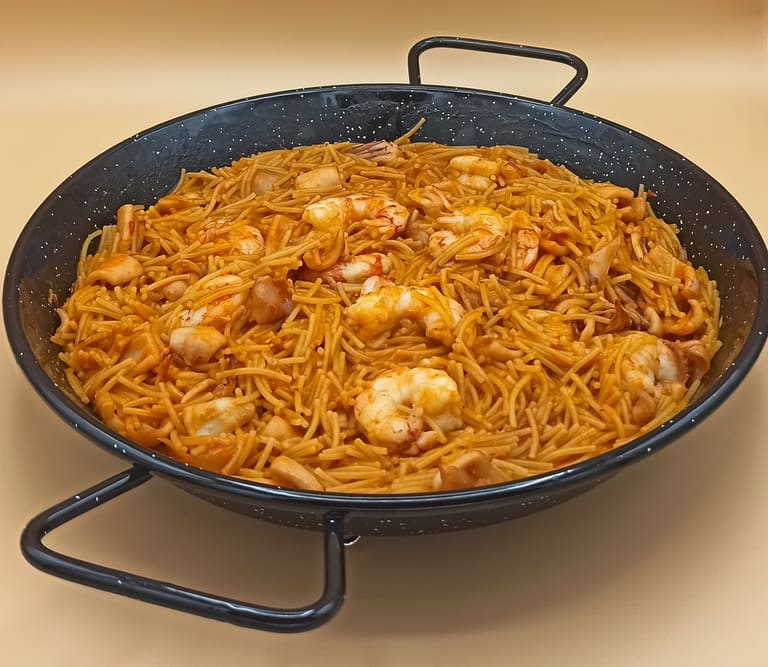
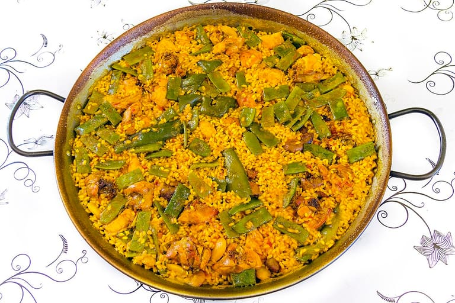
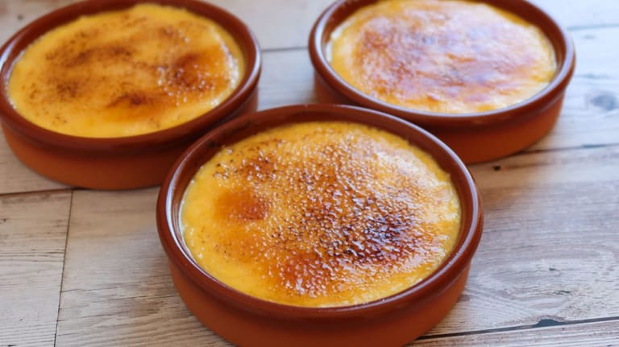
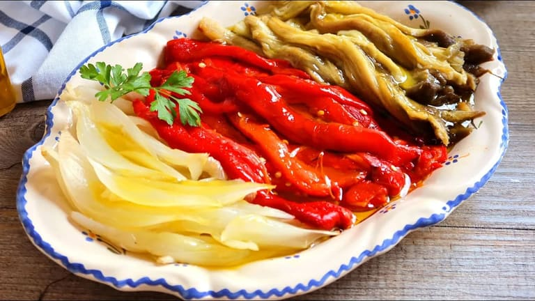
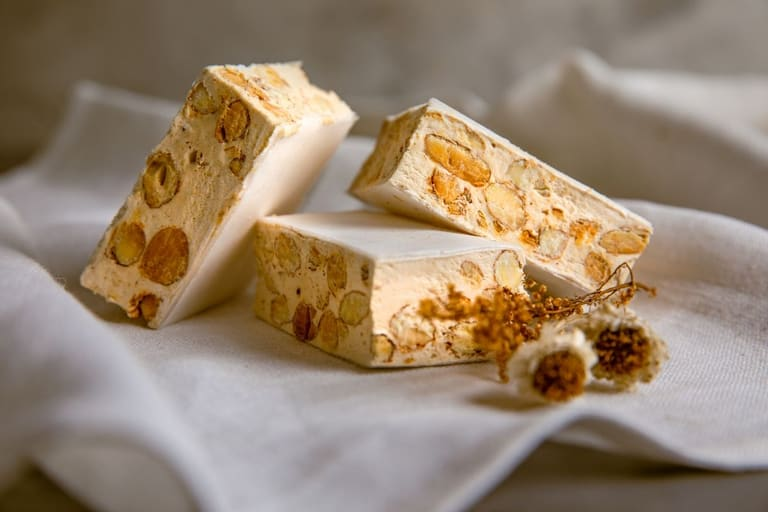

Totes les receptes
-

PrimersPa amb Tomàquet
El clàssic català per excel·lència. Senzill, fresc i deliciós.
Veure recepta -

-

SegonsPaella Valenciana
La recepta tradicional valenciana amb pollastre, conill i garrofó.
Pròximament -

PostresCrema Catalana
La postres catalana per excel·lència, cremosa i amb sucre caramel·litzat.
Pròximament -

-
